1980 - 1999
A fundação da música geek no Brasil não foi um movimento autoral espontâneo, mas sim uma respostas funcional às demandas da indústria. Durante a transição das décadas de 1980 para 1990, o Brasil viveu a chamada “Primeira Onda” de animações japonesas em massa, capitaneada por emissoras como a TV Manchete, que buscavam alternativas de baixo custo e alto engajamento para a programação infantil.
O marco zero desse fenômeno pode ser localizado na estreia de Os Cavaleiros do Zódiaco em setembro de 1994. Diferente de produções ocidentais anteriores, os animes traziam trilhas sonoras altamente sofisticadas.
No Brasil, a Sony Music, percebendo o potencial de consumo dessas trilhas sonoras, adquiriu os direitos para a produção da trilha sonora brasileira oficial de Os Cavaleiros do Zódiaco in 1995. O objetivo não era apenas a exibição televisiva, mas a criação de produtos fonográficos que pudessem ser vendidos em larga escala.
Este período consolidou a ideia de que a música era uma extensão indissociável da experiência do fã de anime, criando uma base emocional que perduraria por décadas.
Ao lado, podemos visualizar essas aberturas tão icônicas, duvido que nunca tenha escutado nenhuma! kkkk
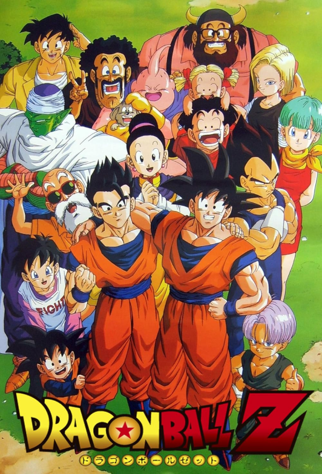
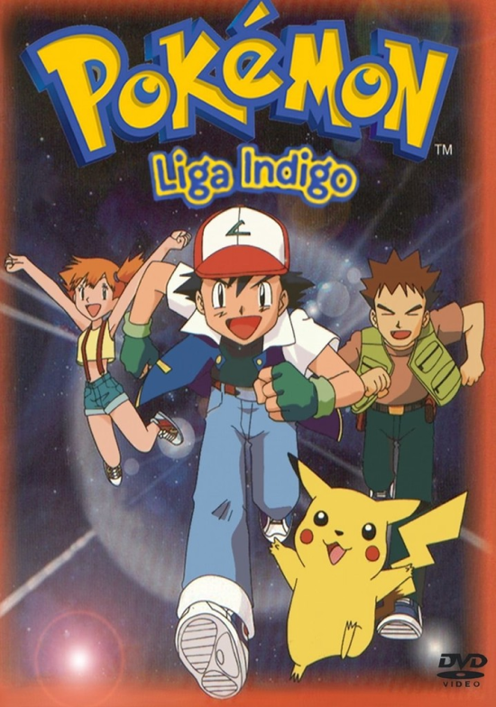
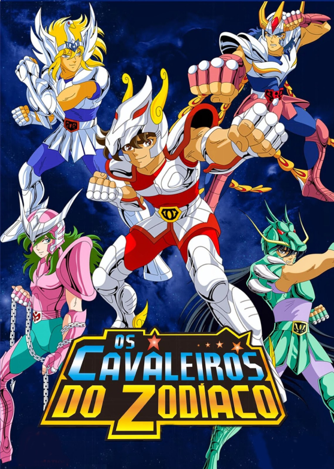
2000 - 2011
Com a fragmentação da audiência televisiva e o advento da internet banda larga, o consumo de música geek começou a se deslocar para ambiente presenciais e comunidades online. O surgimento de grandes eventos de cultura japonesa, como o Anime Friends (fundado em 2003), criou um palco para bandas que não se limitavam a reproduzir as trilhas oficiais, mas que infudiam elementos de J-Rock e Heavy Metal nas composições, e então, a partir de 2005, a cena começou a ver o surgimento dessas bandas, que buscavam uma sonoridade mais agressiva e técnica.
A banda Gaijin Sentai, formada em 2006 em Caraguatatuba, introduziu uma inovação estética significativa ao misturar músicas de anime e tokusatsu com o peso do Heavy Metal e ritmos tradicionais brasileiros, como o maracatu. A Gaijin Sentai não apenas realizou covers, mas compôs material autoral e estabeleceu parcerias internacionais com nomes como Eizo Sakamoto (ex-Anthem e JAM Project) e Yumi Matsuzawa, realizando turnês pela Europa e Japão.
Outra banda, a The Kira Justice, de Porto Alegre, exemplica a transição para a era digital. Eleita em 2010 como a melhor banda de J-Rock do Brasil pela rádio Animix, o grupo foi pioneiro na distribuição gratuita de álbuns pela internet e no uso intensivo do Myspace e YouTube para engajar fãs. Essa estratégia de “acesso livre” permitiu que bandas de nicho alcançassem estados onde o acesso físico a conveções era limitado, democratizando o consumo da música geek.
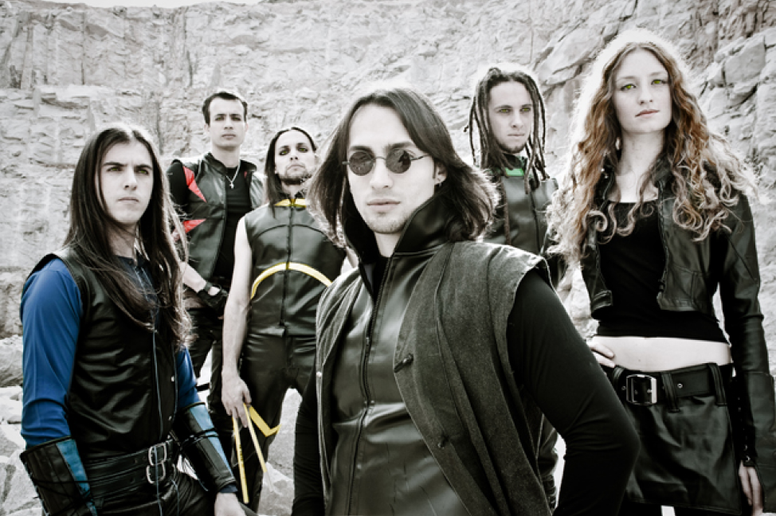
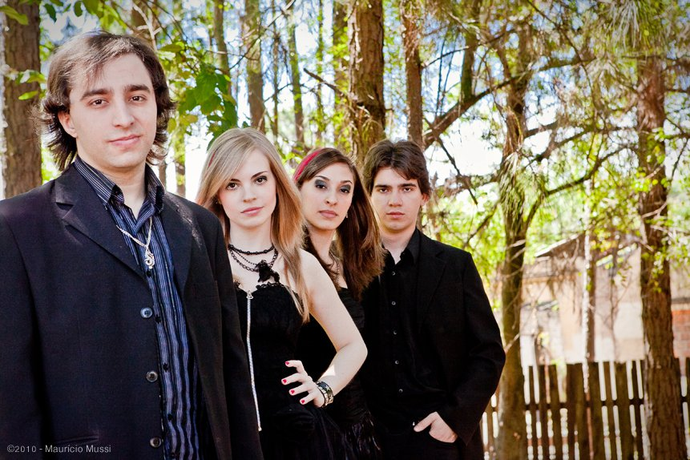
2012 - 2014
O ano de 2012 marca uma ruptura estrututal na história da música geek brasileira.
É o período em que o subgênero conhecido como nerdcore (hiphop com letras focadas em videogames, animes e quadrinhos) granha uma identidade brasileira distinta sob a forma do “rap nerd”.
A música geek começou a atingir um sucesso sem precedentes após o grupo 7 Minutoz começar a postar suas produções em 2012. Formado por Lucas A.R.T, Gabriel Rodrigues e Pedro Alvez, o grupo foi um dos primeiros a aplicar a métrica do rap para narrar histórias de personagens da Marvel, DC e, principalmente, animes. A proposta do 7 Minutoz não era apenas musical, mas pedagógica e imersiva: os ouvintes podiam aprender pelo menos parte da biografia de um herói ou vilão através de uma letra bem estruturada.
Quase simultaneamente, Player Tauz consolidou o genêro ao focar na psicologia dos personagens e em temas motivacionais. Podemos dizer que inclusive que quem furou essa bolha e levou o rap nerd para além do nicho de animes foi o próprio Tauz.
A relação entre esses pioneiros foi fundamental para a construção da cena; o 7 Minutoz realizou colaborações com Tauz quando este ainda era um artista emergente, impulsionando mutuamente o tráfego de visualizações e criando um ecossistema de feats (parcerias) que se tornaria o padrão desse mercado até os dias de hoje.
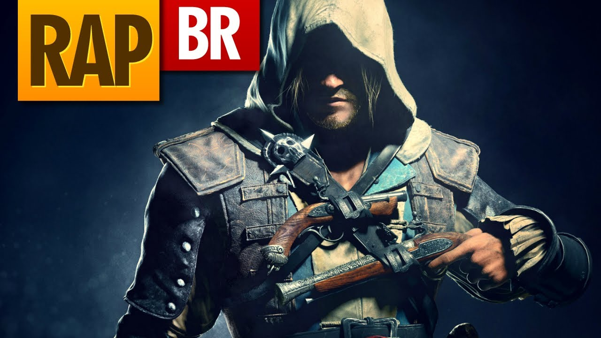
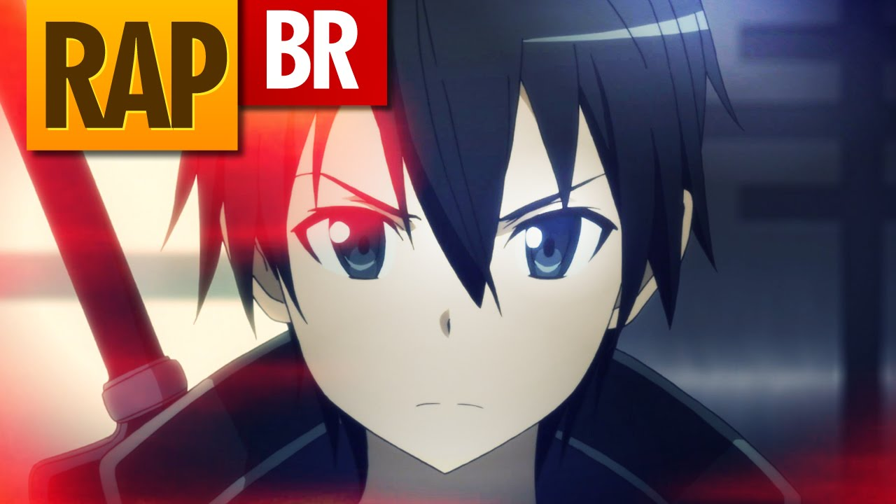
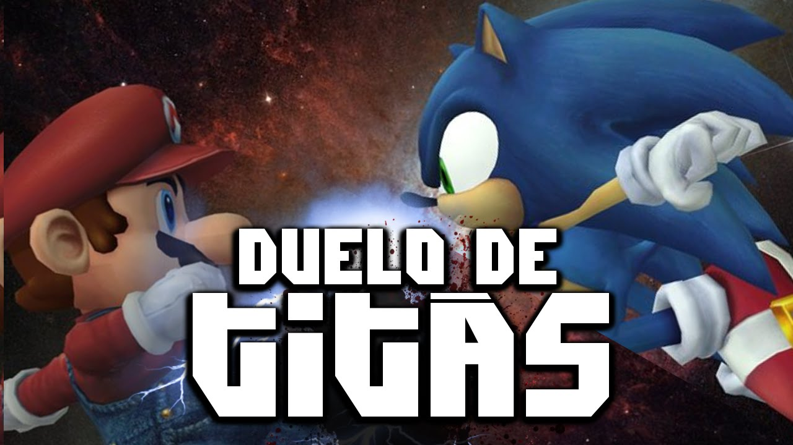
2015 - 2019
Entre 2015 e 2019, o gênero deixou de ser uma novidade experimental para se tornar uma indústria de entretenimento de alta performance. A diversificação sonora foi o principal motor dessa fase, com a introdução de elementos de Trap, Rock agressivo e melodias românticas.
Nesse período podemos dar destaque para quatro principais artistas, sendo eles, VMZ, Felícia Rock e TK Raps.
Francisco Sandro Junior, artisticamente conhecido como VMZ, consolidou-se como um dos pilares mais singulares desse período ao introduzir o rap melódico e o sad rap no cenário geek. Assim, abordava os sentimentos dos personagens, trazendo esse lado mais incompreedido á tona.
Outro artista determinante foi TK Raps (Leonardo Nascimento), que se autodenomina "O Criador do Agressivo". TK Raps trouxe uma técnica vocal mais próxima do metal e do rap técnico, focando na personificação direta: o cantor assume a identidade do personagem, narrando suas lutas e dores em primeira pessoa.
Felícia Rock (Yasmin Felícia) representou uma mudança qualitativa na cena ao unir covers de aberturas clássicas com composições autorais que traziam dilemas da ficção para a realidade. Sua presença foi vital para atrair e representar o público feminino, tratando de temas como superação de preconceitos e dilemas éticos, exemplificados por canções inspiradas em personagens como Naruto.
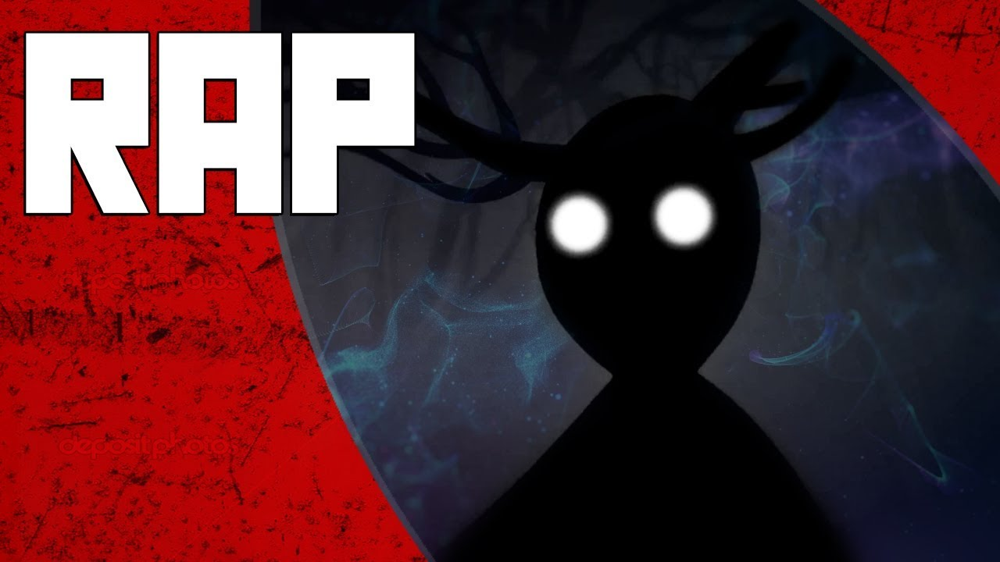
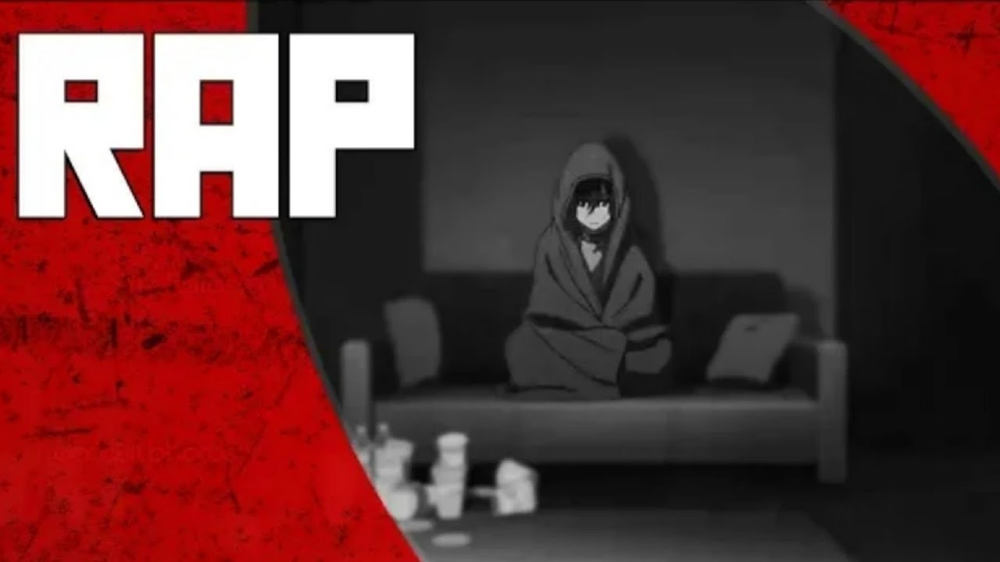
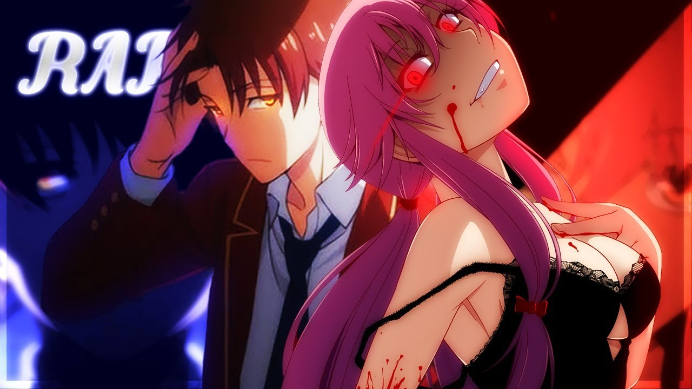
2020 - 2022
O ano de 2020 foi um catalisador para a música geek devido à pandemia de COVID-19, que elevou exponencialmente o consumo de conteúdo digital. Foi neste cenário que o gênero atingiu seu auge comercial e começou a ser tratado pelas grandes gravadoras como um ativo estratégico.
Em 17 de maio de 2020, o 7 Minutoz lançou o "Rap da Akatsuki (Naruto) - OS NINJAS MAIS PROCURADOS DO MUNDO", que se tornou a música mais popular de toda a história do rap geek no Brasil, ultrapassando 246 milhões de visualizações até meados de 2026. O sucesso foi tão estrondoso que o vídeo passou a ser considerado um marco cultural, gerando incontáveis "reacts", memes e paródias, e solidificando o canal 7 Minutoz como um gigante com mais de 10 milhões de inscritos.
Após esse grande evento, podemos dizer que não foi somente o canal 7 Minutoz, mas a cena como um todo ganhou um patamar de relevância muito maior do que em todos os outros anos.
E algo interessente sobre o Rap Da Akatsuki é que ele popularizou esse modelo de especiais, onde vários artistas se juntam para cada um representar um personagem da obra. E esse modelo segue sendo um dos mais consumidos até os dias de hoje.
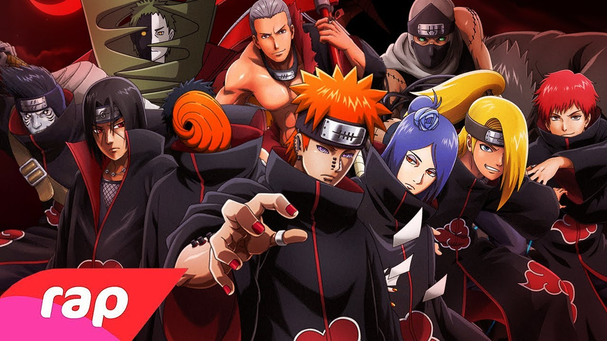
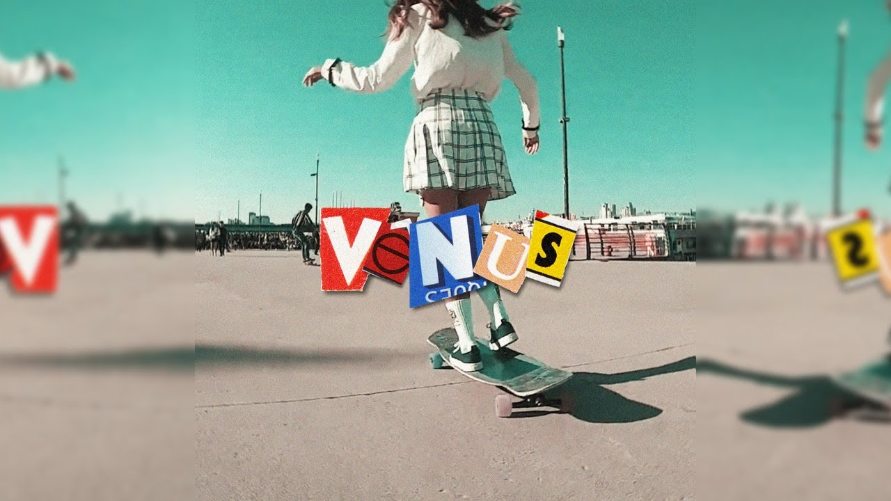
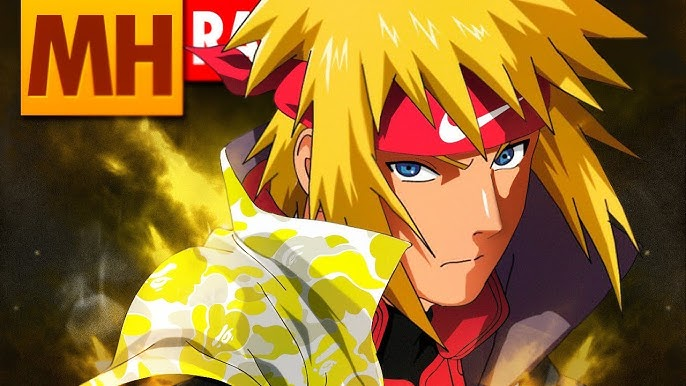
2023 - 2026
Finalmente chegamos ao momento atual da música geek, e do final de 2022 até aqui tivemos muitas mudanças na cena. Sendo elas, o estilo músical predonominante, a qualidade visual das edições dos vídeos, e a implementação de especiais.
Primeiro falando sobre o estilo musical que antes era quase que 100% rap/hip-hop, agora isso não é mais um padrão, e atualmente vêmos muitas músicas com algo mais puxado para o rock, trap, funk, pop, orquestral ou até mesmo, acredite se quiser, piseiro.
Dito isso, com o estouro dos especiais, diversos novos artistas ficaram famosos, como M4rkim, Anirap, Henrique Mendonça, Anny, Chrono, Shiny, Shooter e muito mais. E sabe a melhor parte? Cada um deles canta estilos completamente diferentes um do outro e além disso ainda mesclam vários estilos diferentes e essa liberdade com certeza torna a cena geek diferenciada das demais.
E todos esses artistas tem milhares ou milhões de views mensalmente, assim podemos dizer que a cena geek não é mais apenas um nicho, ela é um fenômeno cultural completo
Com tudo isso, devemos parar e pensar, a música geek brasileira já é algo que faz parte da cultura brasileira e que merece o devido respeito dentro deste espaço que já é tão diverso.
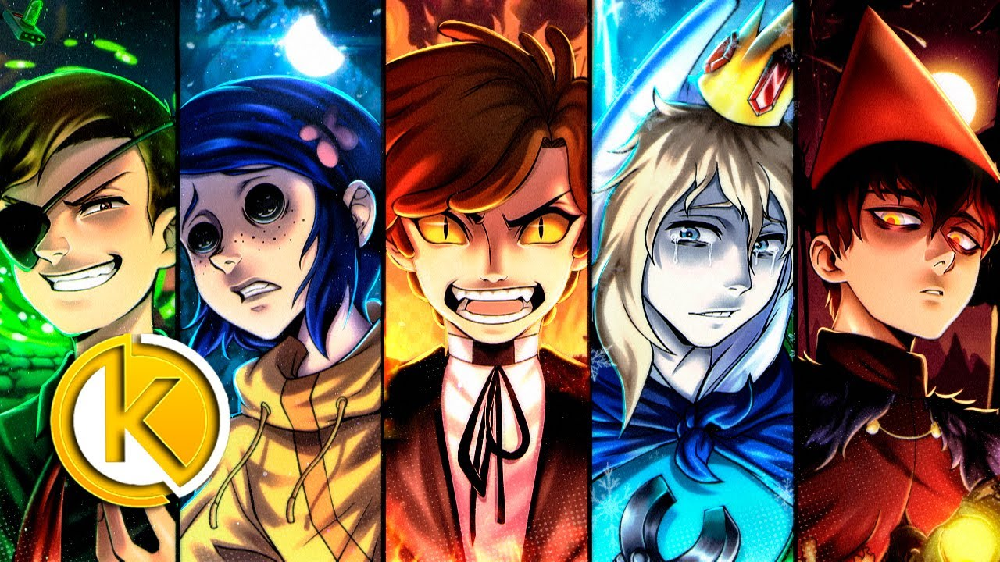
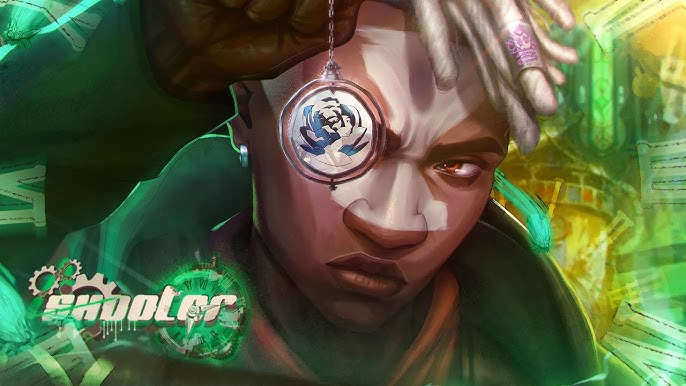
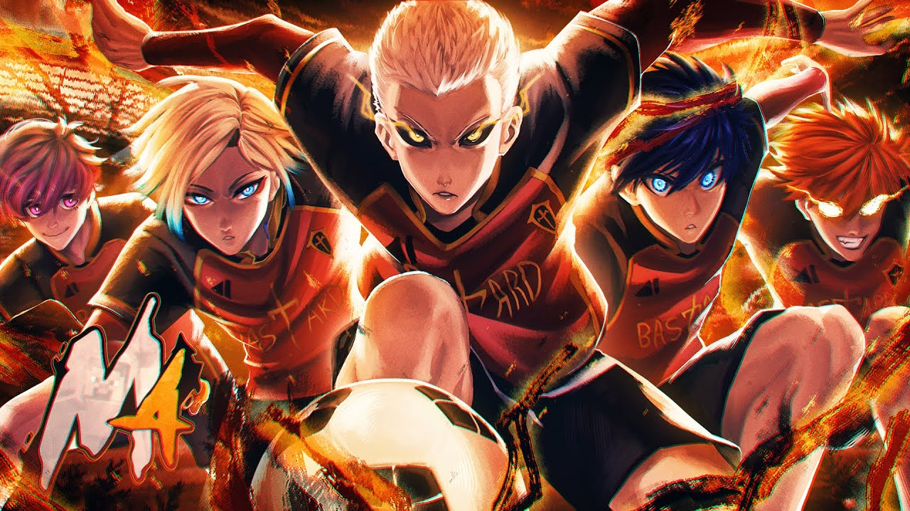